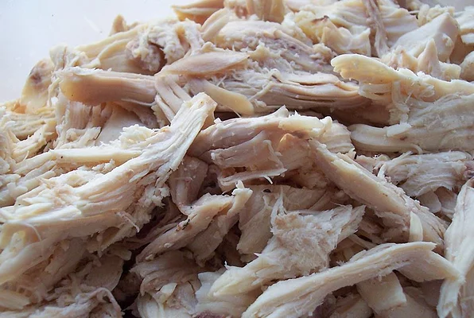

Boiled Chicken

Description
Delicious vegetable lasagna with a white creamy sauce. A family favorite!
Ingredients
- 1 (3 pound) whole chicken
- 1 large onion, halved - unpeeled
- 3 carrots, cut into chunks - unpeeled
- 2 stalks celery, cut into chunks
- 1 tablespoon whole peppercorns water to cover
Directions
-
Place chicken in a large pot with onion, carrots, celery and peppercorns;
add water to cover. Cover pot and bring to a boil; reduce heat to a gentle
boil and cook for about 90 minutes, or until chicken meat is falling off of
the bone. Remove chicken, let cool and shred or chop the meat.